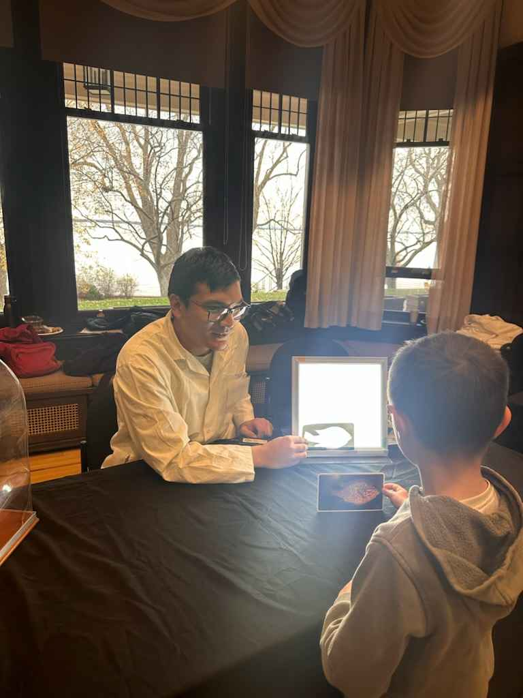
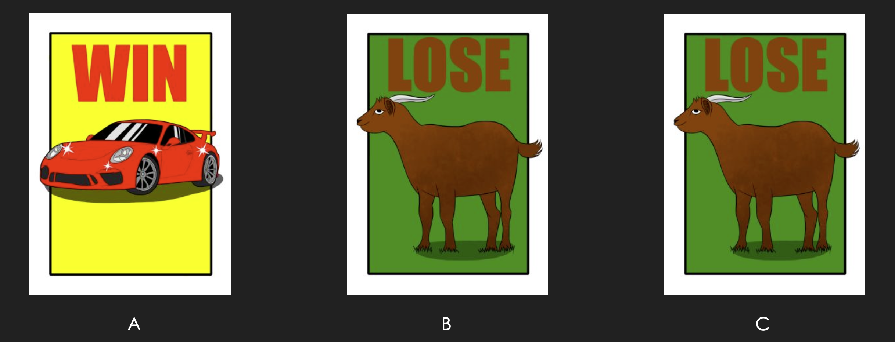

38th Edition Exposcience
I had the incredible opportunity to participate in the 38th edition of Exposcience at the Stewart Hall Cultural Centre on November 9 and 10. As part of the Darwin Room, I contributed to two interactive stations: a hand-washing station to demonstrate the importance of hygiene and an x-ray station to explore the fascinating world of medical imaging. It was an amazing experience to engage with visitors of all ages, share knowledge, and celebrate the wonders of science in a fun and accessible way.
Concordia Math Fair
As part of a Concordia University math outreach initiative, I developed an activity centered on the Monty Hall Problem for high school students (grades 9-11). I designed the session to include an interactive experiment and a guided discussion to uncover the counterintuitive solution. I created custom made activity cards, to facilitate hands-on participation.
